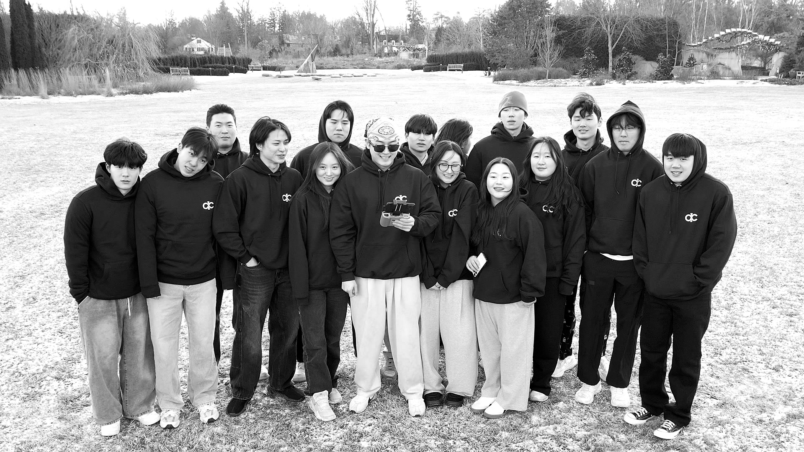

It started with just an idea
IC (Infinite Challenge) wasn't supposed to be a studio. It started as a creative project between friends who wanted to make videos and see what we could build together.
We made our first challenge video in late 2025. It was rough, unpolished, but something clicked. People responded to it. We got views, shares, and more importantly — people wanted to collaborate.
By December 2025, we had grown to 30 people across video, design, and writing. We weren't planning to build a studio. It just happened because we made something people wanted to be part of.
You can't scale by being the only one who understands the work
In the first month, I was doing everything. Creative direction, shooting, editing, posting, responding to collaborators. I was the bottleneck.
I realized quickly that if IC was going to grow, I had to stop being the person who did all the work. I had to become the person who made it easy for other people to do the work.
That meant writing playbooks. Creating templates. Documenting processes. Making decisions once instead of 30 times.
The shift from "I do this" to "here's how we do this" is where real scaling happens.
Diverse skills matter more than perfect execution
We didn't hire video experts and design experts and writing experts. We hired people who were passionate about creating *something*, even if they weren't experts at creating *that specific thing*.
A designer learned how to frame shots. A videographer learned design principles. A writer learned how to give creative feedback on visual work.
The cross-pollination of skills made our work better. Everyone understood everyone else's constraints and possibilities. The output got stronger, not weaker.

The IC creative team — 30 people across video, design, and writing, all working toward the same vision
Culture is what people choose to show up for
We don't pay much. We're students and freelancers working on passion projects. But people keep showing up because of the culture we built.
That culture is: make something you're proud of, help each other get better, celebrate wins (big and small), and don't tolerate people who drain energy from the group.
I've seen studios with bigger budgets and more resources fail because they didn't invest in culture. We've succeeded because that's literally all we have.
The hardest part is saying no
Every week, people pitch new ideas. New challenges, new series, new collaborations. Most of them are good ideas.
But the studio doesn't scale by doing more. It scales by doing fewer things, really well.
Learning to say "that's a great idea, but it's not for us right now" has been harder than learning to say yes. But it's saved us from spreading too thin.
What I'd tell someone building a team from scratch
Start small. You don't need 30 people to know if your idea works. Start with 3-5 people who actually care.
Document everything early. The processes you figure out at 5 people will break at 15. Fix them before you get there.
Your people matter more than your ideas. Good people can salvage a mediocre idea. Bad people can sink a great one.
Culture scales, but only if you intentionally build it. Don't assume it will happen. Create rituals, celebrate wins, and actively protect the vibe you want.
The real test
We've made 20+ challenges, reached 20,000+ views, and built a following of 300+ on Instagram. But those aren't the metrics that matter most to me.
The metric that matters is: would these 30 people choose to work on this if they had other options? And honestly, I think most of them would. That's how I know we're building something real.